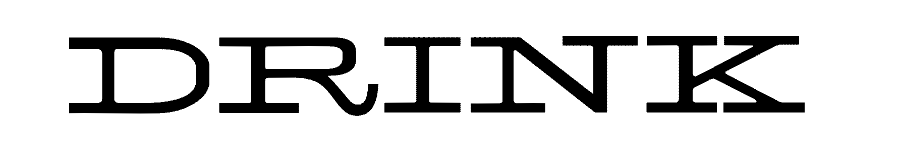
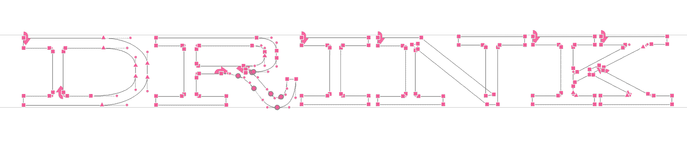
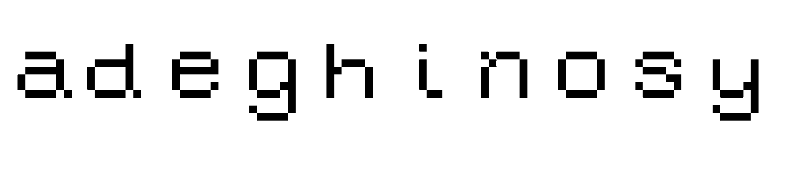
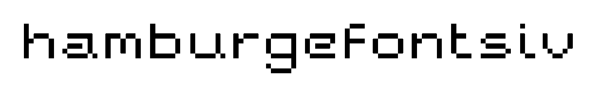
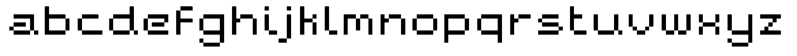
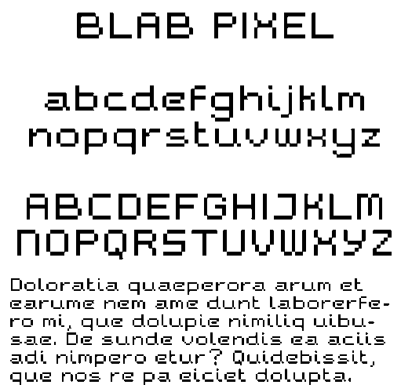
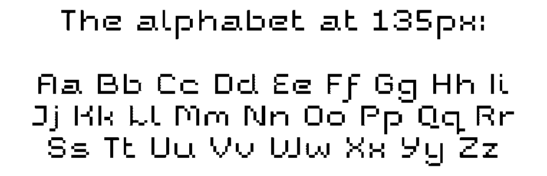

1.1 Bézier Bending
Starting the class with a drawing exercise. Already picking up some small fears of not knowing how or when to add overlaps.
 What’s stood out to me the most from our first few readings is this invitation to reconsider associating the way something is made as some sort of inherent indicator of quality: to make sure that, in a broader sense, when I automate my process, that I at least sort of know why I’m doing so—rather than doing it for the sake of it being programmed.
1.2 Pixel Font ^
    the main project
2.1 Research & Brainstorming ^
2.2 Typeface Proposal ^